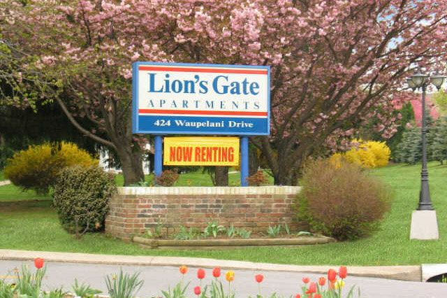
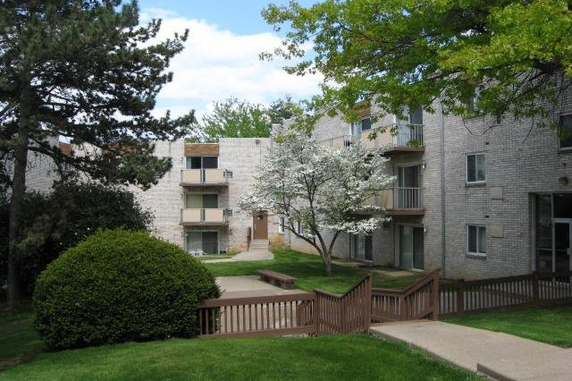
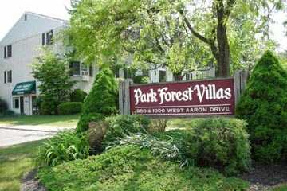
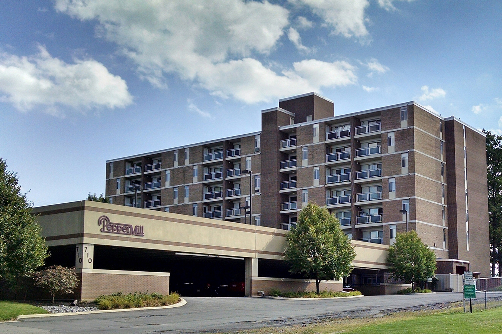
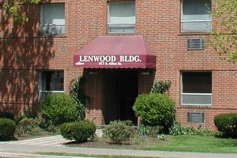

Conveniently located near the University, shopping, schools and downtown, the Lion's Gate Apartment complex is a warm, comfortable community with a diverse mix of residents. Our apartments feature hardwood floors, big closets, large windows, beautiful views, and they are pet friendly. These features all contribute to a quality and affordable lifestyle Every furnished or unfurnished apartment comes with an abundance of amenities:

Executive House Apartments offers Quiet, Comfortable and Affordable apartment Living at a location convenient to Penn State / PSU University Park & downtown State College. These apartment rentals feature some of the nicest floor plans and best prices on rental housing in State College. Most apartments have sliding glass doors onto private balconies or patios. Hardwood-style floors grace the dining room, kitchen and hallways of the 2 bedroom rental units. Located near schools, shopping, restaurants, and just minutes from downtown State College and the PSU University Park Campus.
Amenities

Great prices on 1 & 2 bedroom apartments located in a residential neighborhood but close to many shops and restaurants. Downtown State College and the Penn State / PSU University Park Campus are just minutes away. Most utilities are included and there is one free parking space per bedroom. Affordable housing & easy living in a convenient location with lots of open space.
Amenities

Pepper Mill Condominiums is located next to a public access land called: Community Field, which provides both the local community and our tenants with access to seven lighted tennis courts (the only lighted tennis courts accessible to the public in State College, PA) and large open fields to play football, soccer, Frisbee and other outdoor games with your friends.
Amenities

Lenwood Place is large enough to offer the services you want but small enough to let you get to know your neighbors. This building features large two- and three-bedroom apartments plus a laundry facility. Our South Allen Street location is just one block from CATA’s P and R bus routes and a short walk from both Westerly Parkway and Hamilton Plaza shopping centers, including restaurants, supermarket, and pharmacy.
Amenities